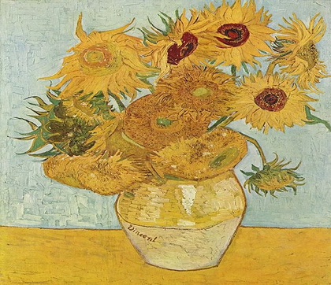
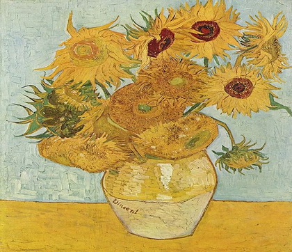
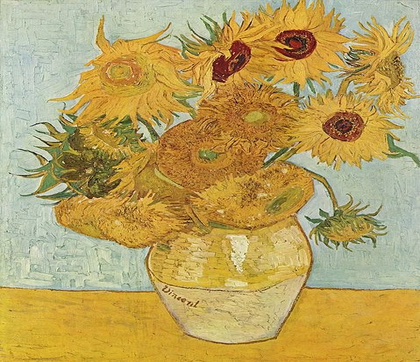
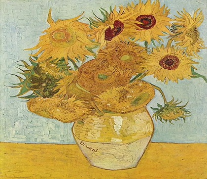

Algunas de sus obras

 

1887 / Autoretrato con sombrero de fieltro gris
1888 / El cafe de noche
1889 / Jarron con quince girasoles
 

1887 / Autoretrato con sombrero de fieltro gris
1888 / El cafe de noche
1889 / Jarron con quince girasoles